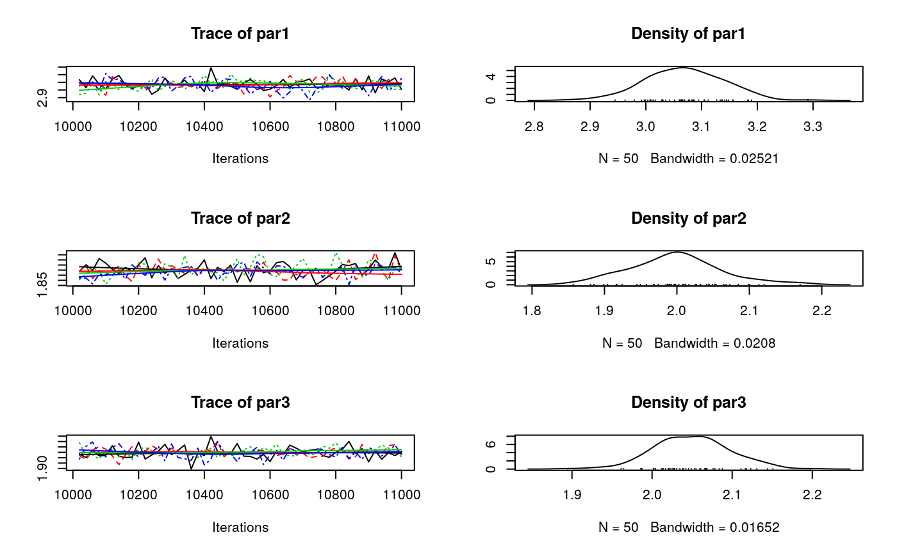

The amcmc R package implements out-of-the-box methods for Adaptive Markov Chain Monte Carlo, and Optimal Scaling Algorithms of Random Walk MCMC. Designed to be used with the coda R package, amcmc allows running multiple chains simultaneously (parallel computing), using Parallel Tempering MCMC, and Random Walks with Reflecting Boundaries.
Current features:
Automatic stop using convergence checker.
Parallel chains using
parallel::lapplyNormal Random Walk with Reflective Boundaries kernel.
Example
Linear regression model
library(amcmc)
# Simulating data
set.seed(78845)
n <- 1000
X <- rnorm(n)
y <- 3 + 2*X + rnorm(n, sd = 2)
# Loglikelihood function
ll <- function(par, X., y.) {
ans <- sum(log(dnorm((y. - (par[1] + X.*par[2]))/par[3])/par[3]))
if (!is.finite(ans))
return(-Inf)
ans
}
# Running the MCMC
ans <- MCMC(
ll, X. = X, y. = y,
initial = c(1, 1, 1),
nbatch = 2e4,
nchains = 4L,
autostop = 1e3,
burnin = 1e4,
thin = 20,
scale = .1,
multicore = TRUE
)## Warning: A single initial point has been passed via `initial`: c(1, 1, 1).
## The values will be recycled.## Convergence has been reached with 11000 steps (50 final count of observations).##
## Iterations = 10020:11000
## Thinning interval = 20
## Number of chains = 4
## Sample size per chain = 50
##
## 1. Empirical mean and standard deviation for each variable,
## plus standard error of the mean:
##
## Mean SD Naive SE Time-series SE
## par1 3.069 0.06863 0.004853 0.004626
## par2 1.998 0.06283 0.004443 0.004185
## par3 2.049 0.04698 0.003322 0.003168
##
## 2. Quantiles for each variable:
##
## 2.5% 25% 50% 75% 97.5%
## par1 2.934 3.019 3.067 3.113 3.190
## par2 1.885 1.957 1.999 2.033 2.142
## par3 1.963 2.018 2.051 2.079 2.144
## Potential scale reduction factors:
##
## Point est. Upper C.I.
## par1 1.00 1.02
## par2 1.01 1.05
## par3 1.01 1.03
##
## Multivariate psrf
##
## 1.02
Contributing to amcmc
Please note that the ‘amcmc’ project is released with a Contributor Code of Conduct. By contributing to this project, you agree to abide by its terms.